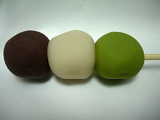

石谷精華堂の倉吉名物打吹公園だんご
2010/2/28
ゆめタウン出雲で販売していたのを買いました。ここではたまに売り子さんが販売しています。
倉吉名物「打吹公園だんご」です。

ホームページを見て分かったんですが、色んな所で販売しているんですね。ご当地名物ってよりも、有名店の団子ですね。
小さめの団子ですが、味が詰まってて濃いです。3色違う餡の味なんですが、それぞれはっきり違う味でした。
中に入っている団子は少し固めで存在感がありました。団子らしい団子ですね。「だんご一筋百二十余年」の会社の団子は美味しいです。